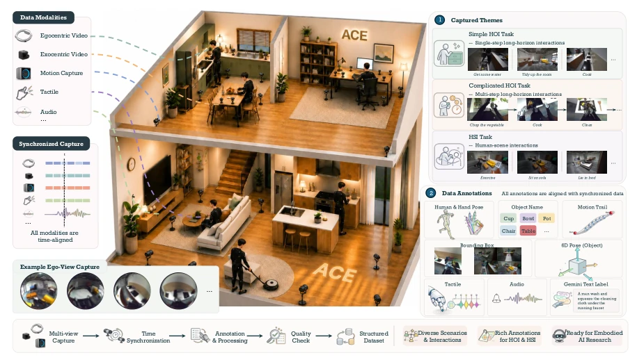
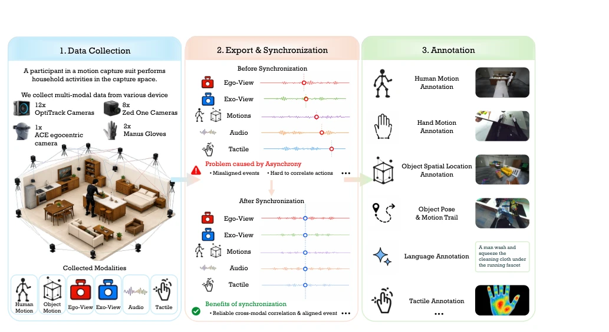
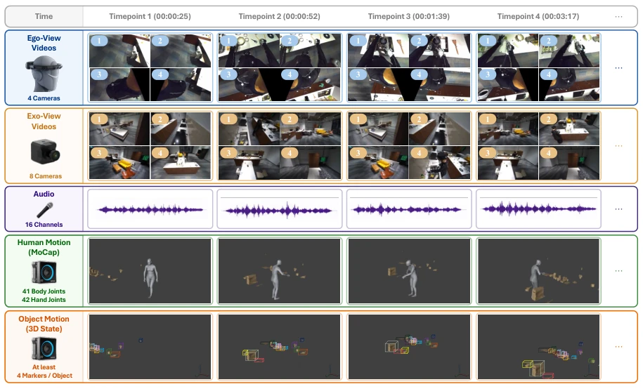
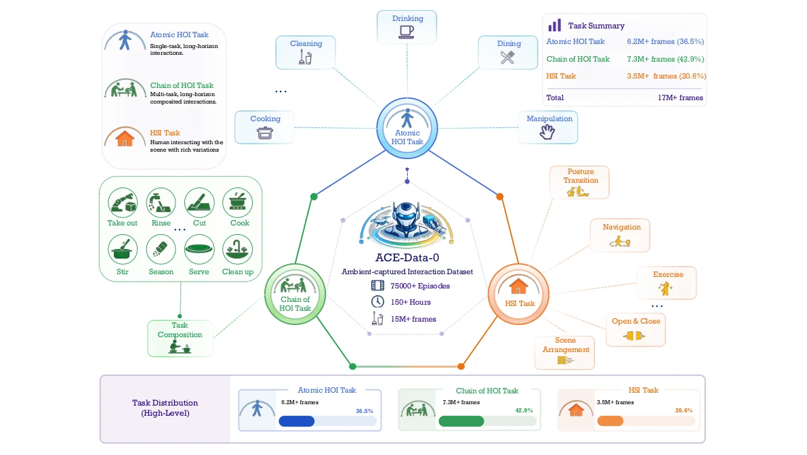
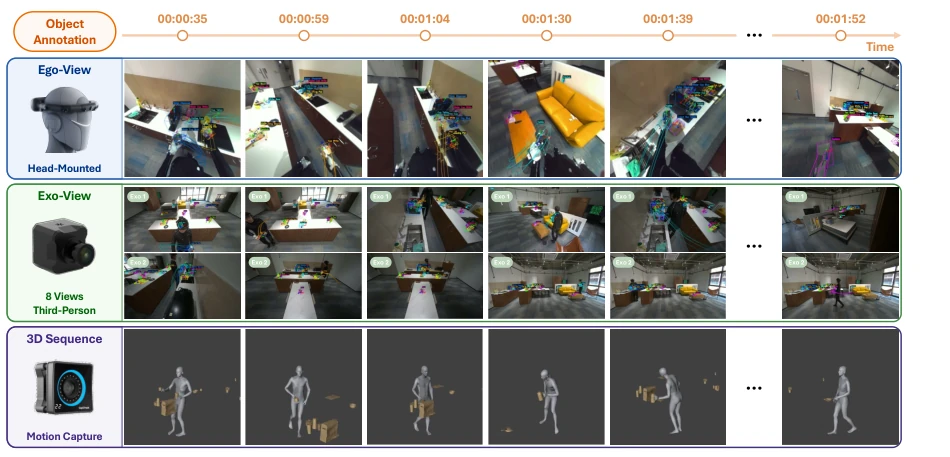
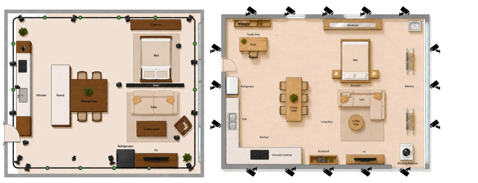
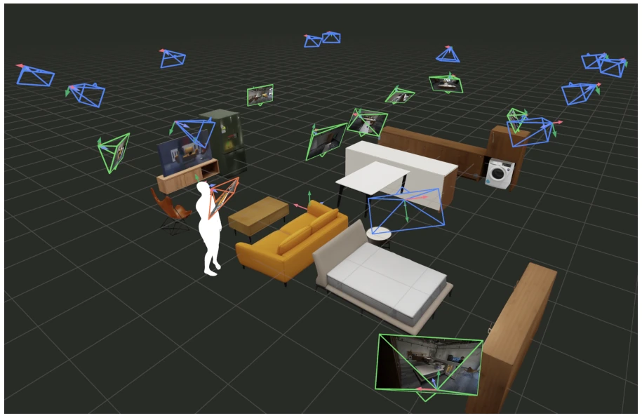
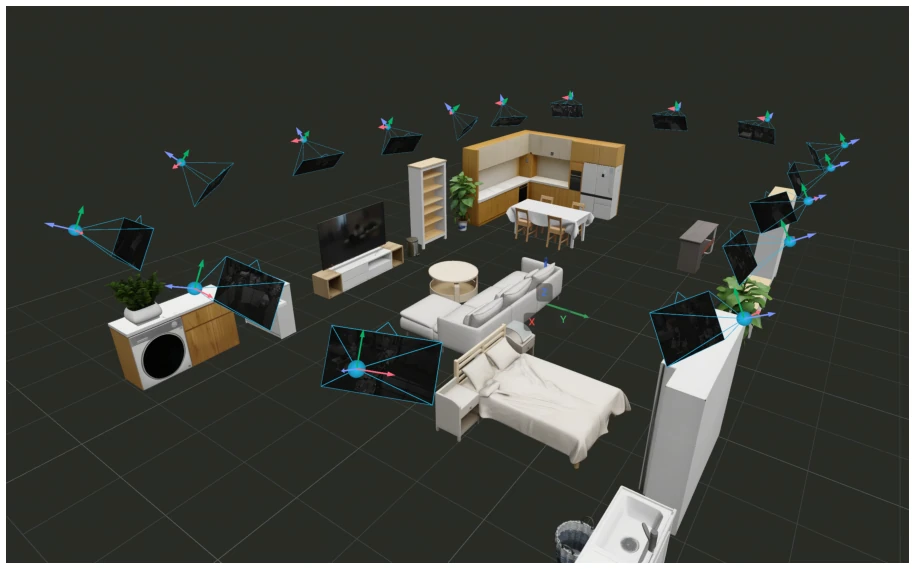
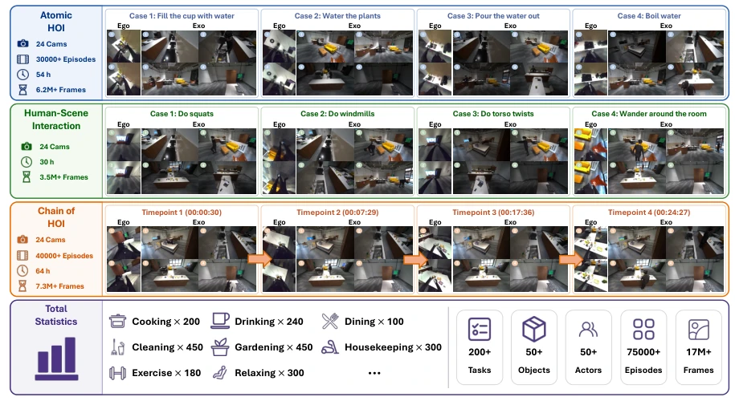
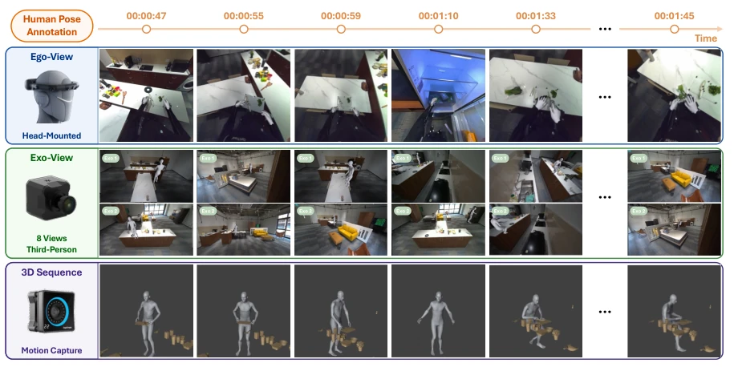

This paper attempts to transform ordinary homes into motion capture studios. ACE-Data-0 sounds ambitious, with 150 hours and 17 million frames, indeed enough to fill up a hard drive. The highlights are "synchronization" and "multi-modal", aligning tactile, audio, and Ego/Exo video completely, which indeed addresses the pain point of embodied intelligence. However, a critique is that this equipment setup is more luxurious than a typical lab; OptiTrack plus ZED plus GoPro plus tactile gloves, the cost is estimated to buy a small car, can ordinary labs afford it? Moreover, while the "real home environment" retains furniture occlusion, it is ultimately a constructed "real", not recorded from a randomly selected residential community. Although the Benchmark section tested 30+ methods, a large gap was found, indicating this data is indeed challenging. Overall, it is a "heavy weapon" in the embodied data field, but whether it can be popularized depends on subsequent open-source strategies and lightweight solutions.
Embodied intelligence faces a data bottleneck. Existing datasets either have only video without physical state (e.g., Ego4D [23]), or only motion capture without first-person perspective (e.g., GRAB [11]). Multi-modal data is often unsynchronized, causing models to fail to learn the perception-action loop. Especially for long-horizon tasks, existing data are mostly second-level clips, unable to simulate the continuity of real household chores. Furthermore, lab environments are too clean, lacking the occlusion and spatial constraints of real homes. ACE aims to resolve these disconnects, providing spatiotemporally aligned complete perception-action data. Existing work such as Ego-Exo4D [7] has dual views but lacks tactile and fine-grained object state.

Figure 1 We introduce the Ambient Capture Engine (ACE), a capture system that transforms real home envi- ronments into recording studios. ACE observes household activity at two complementary scales, i.e., table-scale and room-scale. Via ACE, we capture and release ACE-Data-0 with synchronized multiple modalities and rich data annotations.
The ACE system is divided into Table-scale (fine manipulation) and Room-scale (full-body motion) two configurations, covering 30 sqm and 200 sqm spaces. The pipeline includes acquisition, synchronization, and annotation. The core innovation lies in multi-modal synchronization: using the OptiTrack optical motion capture clock as a baseline, calibrating cameras via QR code displayed timestamps, and aligning tactile gloves using IMU signals. In terms of hardware, the Ego headset is equipped with 4 fisheye cameras, Exo uses ZED/GoPro, and tactile uses Manus gloves. Regarding annotation, it utilizes tracked physical states to automatically generate human/hand/object 6-DoF trajectories, rather than pure manual annotation. The data flow goes from sensors to unified spatiotemporal frames, ensuring each video frame corresponds to a real physical state. Additionally, the system supports 8 Exo views, ensuring visibility under occlusion. In the synchronization process, Exo cameras align OptiTrack timestamps by capturing the QR code clock on the monitor, while the Ego headset completes initial calibration by the wearer gazing at the monitor. Annotation adopts a combination of automatic and manual, object 6-DoF trajectories are calculated directly by the motion capture system, and text descriptions are generated by Gemini.

Figure 3 Overall workflow of ACE. Each participant wears the motion-capture suit before the multi-modal recording. Synchronization is conducted after data export to align the timeline of each modality. Finally, we annotate the collected data with rich and high-quality labels derived from the captured ground truth.

Figure 4 Synchronized modalities captured by ACE. ACE is capable of capturing synchronized multi-modal data, including egocentric and exocentric videos, audio, and human and object motions, etc.
The dataset contains 150 hours, 17M frames, 50 people, 200 tasks. The Benchmark is divided into three layers: signal-level (tactile inference), component-level (motion recovery), and interaction-level (HOI). 30+ methods were evaluated, finding that existing models perform poorly under occlusion, long sequences, and cross-views. Ablation experiments show that synchronization is key to performance improvement. The data covers atomic operations, long-chain household chores, and human-machine scene interactions. In specific evaluations, the tactile inference task exposed the insufficiency of visual models in contact force prediction, while the HOI task revealed the limitations of single views under complex occlusion.

Figure 8 Overview statistics of ACE-Data-0. ACE-Data-0 covers three types of interaction tasks: atomic HOI tasks, chains of HOI tasks, and HSI tasks.

Figure 9 Examples of data annotation for captured objects. ACE-Data-0 provides rich annotations for the captured objects, including name tags, 6-DoF poses, bounding boxes, and motion trails.
其他图片Other Figures

Figure 2 Overview of the Ambient Capture Engine. We design two complementary home scenes and capture at two spatial scales, with the equipment installed accordingly.

Figure 5 Calibrated cameras in the room-scale configuration. The blue cameras represent the OptiTrack PrimeX 22 for motion capture; the green cameras denote the ZED One for capturing exocentric RGB videos; the orange camera is one of the egocentric cameras in ACE-Ego-Head.

Figure 6 Calibrated cameras in the table-scale configuration. The blue cameras represent the OptiTrack PrimeX 22 for motion capture.

Figure 7 Examples of different task categories captured in ACE-Data-0.

Figure 10 Examples of data annotation for the captured human body and hands. ACE-Data-0 provides ground-truth poses for both the human body and hands. We also project the poses to both egocentric and exocentric videos for better embodied AI learning with visual inputs.